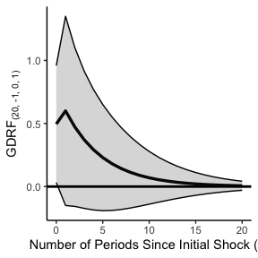
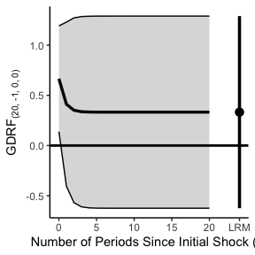
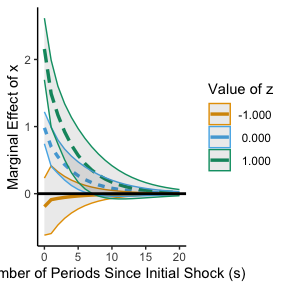
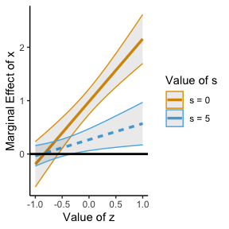
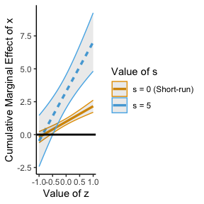
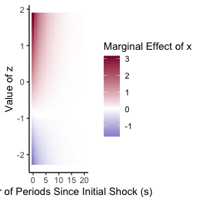
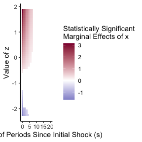

An Introduction to tseffects: Dynamic Inferences from Time Series (with Interactions)
Soren Jordan, Garrett N. Vande Kamp, and Reshi Rajan
2026-07-15
Source:vignettes/tseffects-vignette.Rmd
tseffects-vignette.RmdAutoregressive distributed lag (A[R]DL) models (and their reparameterized equivalent, the Generalized Error-Correction Model [GECM]) are the workhorse models in uncovering dynamic inferences. Since the introduction of the general-to-specific modeling strategy of Hendry (1995), users have become accustomed to specifying a single-equation model with (possibly) lags of the dependent variable included alongside the independent variables (in differences or levels, as appropriate) to capture dynamic inferences. Through all of the following, we assume users are familiar with such models and their best practices, including testing for stationarity on both sides of the equation (Philips 2022), equation balance (Pickup and Kellstedt 2023), the absence of serial autocorrelation in the residuals, or testing for moving averages (Vande Kamp and Jordan 2025). ADL models are simple to estimate; this is what makes them attractive. Once these models are estimated, what is less clear is how to uncover a rich set of dynamic inferences from these models. This complication arises in three key areas.
First: despite robust work on possible dynamic quantities of interest that can be derived from dynamic regression models (see De Boef and Keele (2008)), the actual calculation of these quantities (and corresponding measures of uncertainty) remains a considerable difficulty for practitioners. Formulae are often recursive, complex, and model-dependent (i.e. on the underlying lag structure of the model), leading to complex calculations when considering quantities when considering periods other than an instantaneous effect or a long-run multiplier. Existing methods suffer from memory problems, which can cause calculations to fail (Natsiopoulos and Tzeremes 2022). While other, simulation-based methods exist to interpret A[R]DL models (as in Jordan and Philips (2018a)), these methods are not well equipped to test hypotheses of interest and make parametric assumptions.
Second: methodological approaches for time series that are integrated but not cointegrated routinely involve differencing variables one or both sides of the ADL model to ensure stationarity. Yet researchers might wish to uncover inferences about their variables in levels, even if model estimation requires them to be in differences. Some work approaches this by generalizing shock histories to allow for inferences in levels or differences (Vande Kamp, Jordan, and Rajan (2025)), but no implementation of this approach exists in software.
Third: the problem grows much more complicated when considering conditional dynamic relationships. Though recent work advances a unified modeling strategy through the use of multiplicative interactions, including cross-lags, in a general framework (see Warner, Vande Kamp, and Jordan (2026)), no similar general approach exists to visualize interactive effects. This problem is complicated by the observation that, in any dynamic interactive model, time itself is a moderator that must be accounted for (Vande Kamp, Jordan, and Rajan (2022)) in addition to the values of both variables in the interaction (well established since Brambor, Clark, and Golder (2006)).
tseffects solves these problems. Our point of departure
is leveraging Box, Jenkins, and Reinsel (1994). Rather than deriving period-specific and
cumulative effects for every combination of independent variables, lags,
and lags of the dependent variable (as in Wilkins (2018), for instance), or simulating the
unfolding effects over time (as in Jordan and Philips (2018b)), Box, Jenkins, and Reinsel propose
calculating the Impulse Response Function and Step Response Function in
order to understand the effect a shock history being applied to an
independent variable has on a dependent variable. We implement the
recursive formula proposed for these quantities of interest using
symbolic programming by using the mpoly package. We then
implement the generalized quantities proposed for differenced variables
by Vande Kamp, Jordan, and Rajan (2025).
To show how, we first re-introduce the ADL and GECM models and define
typical effects calculated from these models. We then apply those
effects to each of the unique problems outlined above.
The ADL/GECM model
To help ensure consistency in notation, we define the ADL(,) model as follows
Similarly, we define its GECM(,) equivalent as
The two models are isomorphic: an
ADL(,)
model is algebraically equivalent to a
GECM(,)
model. Notice in particular the form of the GECM with a single first lag
of both the dependent and independent variable in levels. (The GECM
calculations provided by GDRF.gecm.plot assume this
correctly specified GECM and use the variable translations between the
GECM and ADL to define the coefficient in ADL terms. These translations
are done by gecm.to.adl.) The model might contain other
regressors, but, for unconditional dynamic models, these regressors are
unimportant for understanding the dynamic effects of variable
.
We will use these models to define and recover time-series quantities of
interest from the underlying model.
A unified approach to inferences: the Generalized Dynamic Response Function
Box, Jenkins, and Reinsel (1994) define quantities of interest that result from various shock histories applied to an independent variable. We focus on two dynamic quantities of interest that result from from a particular shock history being applied to an independent variable. The first is the impulse response function (IRF), which is the effect of a one-time, one-unit increase in the independent variable on the conditional mean of the dependent variable:
Where is the number of time periods since a shock was applied. The second is the step response function (SRF), which is the effect of a permanent, one-unit increase in the independent variable on the conditional mean of the dependent variable. This quantity is also referred to as a cumulative impulse response function in the time series literature.
The ADL model is well established, and traditional quantities of interest are well known. The IRF and SRF are often estimated from an ADL including a dependent variable in levels or differences, an independent variable in levels or differences, or a mix of both. Yet scholars might want to make inferences regarding the dependent variable in levels regardless of its order of differencing in the ADL model. Similarly, an ADL model may include an independent variable in either levels or differences, but a scholar might want to uncover the effects of a shock history applied to an independent variable in levels even if that independent variable is entered into the ADL in differences. Regular ADL formulae cannot deliver on this expectation. To resolve this deficiency, Vande Kamp, Jordan, and Rajan (2025) introduce the General Dynamic Response Function (GDRF)
with the following elements:
- : the number of times the dependent variable is differenced before determining the effect of the shock on the dependent variable. In other words, in the underlying model time series model, was the dependent variable first-differenced prior to estimation? If so, . If it is in levels,
- : the number of times the independent variable is differenced before a shock is applied to it
- : the number of time periods since a shock was applied (same as above)
deserves special explanation. Vande Kamp, Jordan, and Rajan (Vande Kamp et al. 2025) demonstrate how the binomial function can be used to represent traditional and beyond-traditional shock histories typically examined in time series
- : Shock sequence ; Linear Trend Coefficient of
- : Shock sequence ; Permanent One-Unit Increase (Step)
- : Shock sequence One-Time, One-Unit Increase (Impulse)
The second virtue of the binomial coefficient is that it translates between variables in levels and in differences. (Vande Kamp et al. 2025) demonstrate that an arbitrary shock history for a variable in levels is equivalent to another counterfactual shock history to that same variable after differencing, simply adjusting the parameter :
So the GDRF “translates” these popular shock histories to recover
inferences in the desired form (including levels) of the independent and
dependent variables, regardless of their modeled level of differencing,
given the specified shock history. All scholars need to do is estimate
the ADL model and choose a shock. The virtue of the GDRF is that it
automatically does this translation for you; the virtue of
tseffects is that this translation is in software.
Computationally, the benefit of tseffects is that it
applies these formulae symbolically. Rather than performing many
recursive calculations as effects extend into future time periods, a
symbolic representation of those formulae are built (using
mpoly: (Kahle 2013)) that
only need to be evaluated once using the model’s coefficients and a
variance-covariance matrix selected from the sandwich
package. We can also peek “under the hood” at these formulae, perhaps as
a teaching aid, to observe the GDRF in different periods, based on the
model specified.
Two subfunctions: pulse.calculator and
general.calculator
While it is unlikely that users will want to interact with these
functions, they might be useful either for teaching or for developing a
better understanding of the GDRF. Despite their names, neither function
actually does any “calculation”; rather, they return an
mpoly class of the formula that would be evaluated.
The first is pulse.calculator. Like its name implies,
this provides the formula for the IRF for time period
up to some limit. It returns a list of formulae, each one
the IRF for the relevant period. (Time series scholars might refer to
these as the period-specific effects.) It constructs these formulae
given a named vector of the relevant
variables (passed to x.vrbl) and their corresponding lag
orders, as well as the same for
(passed to y.vrbl), if given. Though most ADLs include a
lagged dependent variable to allow for flexible dynamics, it is entirely
possible that a finite dynamic model is more appropriate: in this case,
y.vrbl would be NULL.
Imagine a simple finite dynamic model, where the
variables are mood, l1_mood, and
l2_mood (lags need not be consecutive, though in a
well-specified ADL they likely are). pulse.calculator would
look like
library(tseffects)
ADL.finite <- pulse.calculator(x.vrbl = c("mood" = 0, "l1_mood" = 1, "l2_mood" = 2),
y.vrbl = NULL,
limit = 5)This list is six elements long: including the pulses for each period
from 0 to 5. These will naturally be more complex if there are more
sophisticated dynamics through a lagged dependent variable. For
instance, if you estimate an ADL(1,2), where the
variables are mood, l1_mood, and
l2_mood and the dependent variable is policy
(with its first lag l1_policy).
ADL1.2.pulses <- pulse.calculator(x.vrbl = c("mood" = 0, "l1_mood" = 1, "l2_mood" = 2),
y.vrbl = c("l1_policy" = 1),
limit = 5)These pulses form the basis of the GDRF, given the order of
differencing of
and
and the specified shock history
.
To create the formulae for the GDRF, general.calculator
requires five arguments, most of which are defined above:
d.x and d.y (defined with respect to the
GDRF), h (the shock history applied), limit,
and pulses. The novel argument, pulses, is the
list of IRFs for each period in which a GDRF is desired.
Assume the same ADL(1,2) from above. To recover the formulae for a
GDRF of a pulse shock, assuming that both mood and
policy are in levels (such that both d.x and
d.y are 0), we would run
general.calculator(d.x = 0, d.y = 0, h = -1, limit = 5, pulses = ADL1.2.pulses)
#> $formulae
#> $formulae[[1]]
#> [1] "mood "
#>
#> $formulae[[2]]
#> [1] "l1_mood + l1_policy * mood "
#>
#> $formulae[[3]]
#> [1] "l2_mood + l1_policy * l1_mood + l1_policy**2 * mood "
#>
#> $formulae[[4]]
#> [1] "l1_policy * l2_mood + l1_policy**2 * l1_mood + l1_policy**3 * mood "
#>
#> $formulae[[5]]
#> [1] "l1_policy**2 * l2_mood + l1_policy**3 * l1_mood + l1_policy**4 * mood "
#>
#> $formulae[[6]]
#> [1] "l1_policy**3 * l2_mood + l1_policy**4 * l1_mood + l1_policy**5 * mood "
#>
#>
#> $binomials
#> $binomials[[1]]
#> [1] 1
#>
#> $binomials[[2]]
#> [1] 1 0
#>
#> $binomials[[3]]
#> [1] 1 0 0
#>
#> $binomials[[4]]
#> [1] 1 0 0 0
#>
#> $binomials[[5]]
#> [1] 1 0 0 0 0
#>
#> $binomials[[6]]
#> [1] 1 0 0 0 0 0(Since general.calculator is “under the hood,”
h can only be specified as an integer. Later, in a more
user-friendly function, we will see that shock histories can also be
specified using characters.)
Recall that we might want to generalize our inferences beyond simple
ADLs with both variables in levels. For exposition, assume that
mood was integrated, so, to balance the ADL, it needed to
be entered in differences. The user does this and enters
variables as d_mood, l1_d_mood, and
l2_d_mood. pulse.calculator would look
like
ADL1.2.d.pulses <- pulse.calculator(x.vrbl = c("d_mood" = 0, "l1_d_mood" = 1, "l2_d_mood" = 2),
y.vrbl = c("l1_policy" = 1),
limit = 5)These pulses look identical to the ones from
ADL1.2.pulses. But tseffects allows the user
to recover inferences of a shock history applied to
in levels, rather than its observed form of differences. All we need to
do is specify the d.x order.
general.calculator(d.x = 1, d.y = 0, h = -1, limit = 5, pulses = ADL1.2.d.pulses)
#> $formulae
#> $formulae[[1]]
#> [1] "d_mood "
#>
#> $formulae[[2]]
#> [1] "l1_d_mood + l1_policy * d_mood - d_mood "
#>
#> $formulae[[3]]
#> [1] "l2_d_mood + l1_policy * l1_d_mood + l1_policy**2 * d_mood - l1_d_mood - l1_policy * d_mood "
#>
#> $formulae[[4]]
#> [1] "l1_policy * l2_d_mood + l1_policy**2 * l1_d_mood + l1_policy**3 * d_mood - l2_d_mood - l1_policy * l1_d_mood - l1_policy**2 * d_mood "
#>
#> $formulae[[5]]
#> [1] "l1_policy**2 * l2_d_mood + l1_policy**3 * l1_d_mood + l1_policy**4 * d_mood - l1_policy * l2_d_mood - l1_policy**2 * l1_d_mood - l1_policy**3 * d_mood "
#>
#> $formulae[[6]]
#> [1] "l1_policy**3 * l2_d_mood + l1_policy**4 * l1_d_mood + l1_policy**5 * d_mood - l1_policy**2 * l2_d_mood - l1_policy**3 * l1_d_mood - l1_policy**4 * d_mood "
#>
#>
#> $binomials
#> $binomials[[1]]
#> [1] 1
#>
#> $binomials[[2]]
#> [1] 1 -1
#>
#> $binomials[[3]]
#> [1] 1 -1 0
#>
#> $binomials[[4]]
#> [1] 1 -1 0 0
#>
#> $binomials[[5]]
#> [1] 1 -1 0 0 0
#>
#> $binomials[[6]]
#> [1] 1 -1 0 0 0 0As Vande Kamp, Jordan, and Rajan (2025) suggest, scholars should be very thoughtful about the shock history applied. These shocks are applied to the underlying independent variable in levels. Since is integrated in this example, it might be more reasonable to imagine that the underlying levels variable is actually trending. To revise this expectation and apply a new shock history, we would run
general.calculator(d.x = 1, d.y = 0, h = 1, limit = 5, pulses = ADL1.2.d.pulses)
#> $formulae
#> $formulae[[1]]
#> [1] "d_mood "
#>
#> $formulae[[2]]
#> [1] "l1_d_mood + l1_policy * d_mood + d_mood "
#>
#> $formulae[[3]]
#> [1] "l2_d_mood + l1_policy * l1_d_mood + l1_policy**2 * d_mood + l1_d_mood + l1_policy * d_mood + d_mood "
#>
#> $formulae[[4]]
#> [1] "l1_policy * l2_d_mood + l1_policy**2 * l1_d_mood + l1_policy**3 * d_mood + l2_d_mood + l1_policy * l1_d_mood + l1_policy**2 * d_mood + l1_d_mood + l1_policy * d_mood + d_mood "
#>
#> $formulae[[5]]
#> [1] "l1_policy**2 * l2_d_mood + l1_policy**3 * l1_d_mood + l1_policy**4 * d_mood + l1_policy * l2_d_mood + l1_policy**2 * l1_d_mood + l1_policy**3 * d_mood + l2_d_mood + l1_policy * l1_d_mood + l1_policy**2 * d_mood + l1_d_mood + l1_policy * d_mood + d_mood "
#>
#> $formulae[[6]]
#> [1] "l1_policy**3 * l2_d_mood + l1_policy**4 * l1_d_mood + l1_policy**5 * d_mood + l1_policy**2 * l2_d_mood + l1_policy**3 * l1_d_mood + l1_policy**4 * d_mood + l1_policy * l2_d_mood + l1_policy**2 * l1_d_mood + l1_policy**3 * d_mood + l2_d_mood + l1_policy * l1_d_mood + l1_policy**2 * d_mood + l1_d_mood + l1_policy * d_mood + d_mood "
#>
#>
#> $binomials
#> $binomials[[1]]
#> [1] 1
#>
#> $binomials[[2]]
#> [1] 1 1
#>
#> $binomials[[3]]
#> [1] 1 1 1
#>
#> $binomials[[4]]
#> [1] 1 1 1 1
#>
#> $binomials[[5]]
#> [1] 1 1 1 1 1
#>
#> $binomials[[6]]
#> [1] 1 1 1 1 1 1(Notice that the pulses do not change.) Recall that these are “under the hood”: we publish them so that educators in time-series courses can use them to demonstrate the period-specific effects and/or their accumulation. For practitioners who just want inferences, we expect instead that most they will interact with the full calculation and plotting functions, discussed below.
We take this opportunity to note that mpoly has a set of
characters that complicate its use. Chief among these are the
. character, so variables like d.mood do not
work with mpoly. Unfortunately, these characters are common
in time-series packages that routinely express transformed variables as
l(mood, 1), or something similar. To prevent conflicts with
mpoly, all of these characters are substituted for
underscores, and users are “warned” about this substitution.
Effect estimation and visualization: GDRF.adl.plot and
GDRF.gecm.plot
Again, we expect most users will not interact with these calculators.
Instead, they will estimate an ADL model via lm and expect
easy-to-use effects. (At the bottom of this vignette, we explore how to
map results from other popular time-series packages to
tseffects to obtain inferences.) To achieve this directly,
we introduce GDRF.adl.plot. We gloss over arguments that
we’ve already seen in pulse.calculator and
general.calculator:
-
x.vrbl: a named vector of the variable and its lag orders -
y.vrbl: a named vector of the variable and its lag orders (if a lagged dependent variable is in the model) -
d.x: the order of differencing of the independent variable before a shock is applied -
d.y: the order of differencing of the dependent variable before effects are recovered -
s.limit: the number of periods for which to calculate the effects of the shock (the default is 20)
Now, since effects will be calculated, users must also provide a
model: the lm object containing the
(well-specified, balanced, free of serial autocorrelation, etc.) ADL
model that has the estimates. Users must also specify a shock history
through shock.history. Users can continue to specify an
integer that represents h (from above) or can use the
phrases pulse/impulse (for
)
and step/cumulative (for
).
Users have already indicated the order of differencing of
and
(through d.x and d.y): now the relevant
plotting function can leverage this information and the supplied
shock.history to deliver inferences about
in either levels or differences through inferences.y and
inferences.x. If both
and
are entered into the ADL in levels (so that d.x and
d.y are 0), inferences.y and
inferences.x default to levels. If, however,
either
or
(or both) are entered in differences, users can recover causal effects
from a shock history applied to
in levels, or to a dependent variable realized in levels. However,
they don’t have to. The shock can still be applied to
in differences, or the effects can be realized on
in differences: just change inferences.x to
differences (for the former) or inferences.y
to differences (for the latter).
A few options allow users to tailor levels and types of uncertainty
desired. The first is the type of standard errors calculated from the
model: users can specify any type of standard error accepted by
vcovHC in the sandwich package: this is done
by se.type = (where const is the default).
Users can also specify a level of uncertainty to the delta method other
than 0.95; this is done through dM.level.
Three final arguments control the output returned to the user.
-
return.plot: we assume most users would like a visualization of these results and nothing else (default isTRUE) -
return.data: if the user wants the raw data (to design their ownggplot, for instance), this argument should beTRUE(default isFALSE) -
return.formulae: the formulae can be very complex, but perhaps users want to see the particular formula for the effect in some particular period . Ifreturn.formulae = TRUE, these are returned as a list, along with the binomial series that represents the shock history (default isFALSE)
We’ll use the toy time series data included with the package to illustrate the function. These data are purely expository, as is the model. We do not advocate for this model.
data(toy.ts.interaction.data)
# Fit an ADL(1, 1)
model.adl <- lm(y ~ l_1_y + x + l_1_x, data = toy.ts.interaction.data)
test.pulse <- GDRF.adl.plot(model = model.adl,
x.vrbl = c("x" = 0, "l_1_x" = 1),
y.vrbl = c("l_1_y" = 1),
d.x = 0,
d.y = 0,
shock.history = "pulse",
inferences.y = "levels",
inferences.x = "levels",
s.limit = 20,
return.plot = TRUE,
return.formulae = TRUE)
This recovers the IRF. We can also observe the formulae and
associated binomials in test.pulse$formulae and
test.pulse$binomials. test.pulse$plot contains
the plot: the effect of applying a pulse shock to
.
If we wanted the step effect, we would change
shock.history.
test.pulse2 <- GDRF.adl.plot(model = model.adl,
x.vrbl = c("x" = 0, "l_1_x" = 1),
y.vrbl = c("l_1_y" = 1),
d.x = 0,
d.y = 0,
shock.history = "step",
inferences.y = "levels",
inferences.x = "levels",
s.limit = 20,
return.plot = TRUE,
return.formulae = TRUE)
Equivalently, we could specify shock.history =
0 (since this is the value of
that represents a step shock history).
Imagine that the variable was actually integrated, so, for balance, it was entered into the model in differences.
data(toy.ts.interaction.data)
# Fit an ADL(1, 1)
model.adl.diffs <- lm(y ~ l_1_y + d_x + l_1_d_x, data = toy.ts.interaction.data)To observe the causal effects of a pulse shock history applied to in levels, we would run
GDRF.adl.plot(model = model.adl.diffs,
x.vrbl = c("d_x" = 0, "l_1_d_x" = 1),
y.vrbl = c("l_1_y" = 1),
d.x = 1,
d.y = 0,
shock.history = "pulse",
inferences.y = "levels",
inferences.x = "levels",
s.limit = 20,
return.plot = TRUE)
(Notice the change in d.x and the x.vrbl).
Suppose, though, that we wanted to apply this pulse to
in differences. We just change the form of
inferences.x, leaving all other arguments the same.
GDRF.adl.plot(model = model.adl.diffs,
x.vrbl = c("d_x" = 0, "l_1_d_x" = 1),
y.vrbl = c("l_1_y" = 1),
d.x = 1,
d.y = 0,
shock.history = "pulse",
inferences.y = "levels",
inferences.x = "differences",
s.limit = 20,
return.plot = TRUE)
The same changes could be made to inferences.y (if
were modeled in differences).
We take a moment to make an important, clarifying distinction.
d.x indicates the order of integration of the
variable in the underlying model. So if d_x represents a
variable in first differences, d.x = 1, even if the user
desires the effects of a shock recovered in the levels form (this should
be handled by inferences.x). The same is true of
d.y.
The IRF and SRF are expressed as marginal effects: the effect of
one-unit increases. However, some users would like to observe these
effects as expressed in the original scale of the dependent variable.
For these fitted values, we offer the argument effect.type.
This takes two strings: marginal (the untransformed GDRF
effects shown above) and fitted. If
effect.type = "fitted", the GDRF requested will accumulate
against some baseline value of
,
specified by the user. There are four associated options:
-
prediction.values: if the underlying model is an ADL, what are the values of and the other variables that should be used to calculate a baseline value of ? Give them as a named list -
baseline.y: alternatively, just give a numeric baseline -
baseline.y.se: if passing a numeric baseline, you can also pass uncertainty around it -
shock.size: since the GDRF is accumulating against a baseline, we can scale the GDRF by more than a one-unit increase
This approach is most sensible when imagining an ADL in levels.
Return to model.adl above. This model will have a
steady-state predicted value of
,
given as
(since there is only one predictor, and its first lag). Instead of expressing the GDRF against a baseline of 0 (i.e. the rise and fall of against a baseline of no change), we could express it as changes from the steady state:
# Fit an ADL(1, 1)
model.adl <- lm(y ~ l_1_y + x + l_1_x, data = toy.ts.interaction.data)
test.pulse <- GDRF.adl.plot(model = model.adl,
x.vrbl = c("x" = 0, "l_1_x" = 1),
y.vrbl = c("l_1_y" = 1),
d.x = 0,
d.y = 0,
shock.history = "pulse",
inferences.y = "levels",
inferences.x = "levels",
effect.type = "fitted",
prediction.values = list("x" = mean(toy.ts.interaction.data$x, na.rm = TRUE),
"l_1_x" = mean(toy.ts.interaction.data$x, na.rm = TRUE)),
shock.size = 1,
s.limit = 20,
return.plot = TRUE,
return.formulae = TRUE)
#> Warning in GDRF.dummy.checks(effect.type, prediction.values, baseline.y, : If
#> any differenced variables are included in the model, ensure they are set to 0
#> in prediction.values for a meaningful steady-state predictionThis would show the pulse effect against the steady-state value of
when
is at its average. (Note that we set both x and
l_1_x to mean(x, na.rm = TRUE)): we don’t have
any reason to believe that the long-run average of a variable and its
lag are different. Also note: if a variable were entered into this model
in differences, say d_x, we would strongly caution
against using any other value than d_x = 0. Otherwise, we
would be assuming that
,
the underlying variable, is always changing!) If we wanted to observe
the scaled GDRF for a two-unit shock to x, we would change
shock.size to 2. This approach is especially nice in the
world of an ADL in levels, as we can calculate model-based
error around the steady-state value, using the coefficients from
the model and the steady-state formula.
The approach is possible, but less consistent, in the world of
differenced dependent variables, like a random walk
dependent variable that was differenced prior to estimation. In that
world, there is no “baseline” value of
,
as the series is fundamentally unpredictable. We can still show the GDRF
as accumulating from a particular point—the math is possible—but the
baseline is completely arbitrary and has no model-based uncertainty
around it (the model-based uncertainty is about the changes in
,
not the baseline value). For this world, we can use
baseline.y and baseline.y.se. The latter
defaults to 0 in recognition that any baseline we set is completely user
determined. We can express variation around this baseline—for
instance, if
typically has a wide or small variance. To do so, we would use
baseline.y.se, maybe as an expression of the variation in
.
An example shows the point. Suppose we believe
is
and thus think it is appropriate to difference the variable before
estimation. (Again: these models are all for exposition.) If we model
d_y, any GDRF will show us the effect of
on changes in
.
But it will be completely agnostic on the underlying “starting value” of
from which those changes are accumulating. We can tell
GDRF.adl.plot to accumulate them starting at
baseline.y = 3:
# Fit a model in differences
model.differences <- lm(d_y ~ l_1_d_y + x + l_1_x, data = toy.ts.interaction.data)
GDRF.adl.plot(model = model.differences,
x.vrbl = c("x" = 0, "l_1_x" = 1),
y.vrbl = c("l_1_d_y" = 1),
d.x = 0,
d.y = 1,
shock.history = "pulse",
inferences.y = "levels",
inferences.x = "levels",
effect.type = "fitted",
baseline.y = 3,
shock.size = 1,
s.limit = 20,
return.plot = TRUE,
return.formulae = FALSE)
But note that there is no uncertainty around this initial value, and
we eventually return (with certainty) to the original levels value.
Users may not be accustomed to this “certainty.” To reflect the idea
that the levels version of
has some underlying variation, we could pass this variation through
baseline.y.se. Here, we give it the standard deviation of
the underlying variable in levels.
GDRF.adl.plot(model = model.differences,
x.vrbl = c("x" = 0, "l_1_x" = 1),
y.vrbl = c("l_1_d_y" = 1),
d.x = 0,
d.y = 1,
shock.history = "pulse",
inferences.y = "levels",
inferences.x = "levels",
effect.type = "fitted",
baseline.y = 3,
baseline.y.se = sd(toy.ts.interaction.data$y, na.rm = TRUE),
shock.size = 1,
s.limit = 20,
return.plot = TRUE,
return.formulae = FALSE)
Two important things to note. First, this is not model-based
uncertainty. In other words, the model is confident that, at some point,
will stop changing since d_y will equal 0. We will, with
certainty, return to the underlying baseline value given by the user.
baseline.y.se just allows us to what that typically looks
like in conjunction with some variation in
,
defined by the user.
Second: when the model contains a first-differenced dependent
variable, prediction.values is no longer relevant. The
function will stop users from attempting it. Again: the steady-state
predicted value for a model in differences is no changes
(d_y = 0). There is no meaningful model-based uncertainty
to use.
GDRF.gecm.plot is extremely similar. Imagine the
following specified GECM model (with a first lag only of each
and
in levels)
# Fit a GECM(1, 1)
model.gecm <- lm(d_y ~ l_1_y + l_1_d_y + l_1_x + d_x + l_1_d_x, data = toy.ts.interaction.data)Since both the
and
variables appear in levels and differences, we need to differentiate
them. GDRF.gecm.plot does this by separating them into two
forms
-
x.vrbl: a named vector of the x variables (of the lower level of differencing, usually in levels d = 0) and corresponding lag orders in the GECM model -
y.vrbl: a named vector of the (lagged) y variables (of the lower level of differencing, usually in levels d = 0) and corresponding lag orders in the GECM model -
x.vrbl.d.x: the order of differencing of the x variable (of the lower level of differencing, usually in levels d = 0) in the GECM model -
y.vrbl.d.y: the order of differencing of the y variable (of the lower level of differencing, usually in levels d = 0) in the GECM model -
x.d.vrbl: a named vector of the x variables (of the higher level of differencing, usually first differences d = 1) and corresponding lag orders in the GECM model -
y.d.vrbl: a named vector of the y variables (of the higher level of differencing, usually first differences d = 1) and corresponding lag orders in the GECM model -
x.d.vrbl.d.x: the order of differencing of the x variable (of the higher level of differencing, usually first differences d = 1) in the GECM model -
y.d.vrbl.d.y: the order of differencing of the y variable (of the higher level of differencing, usually first differences d = 1) in the GECM model
The orders of differencing of y.vrbl and
y.d.vrbl (as well as x.vrbl and
x.d.vrbl) must be separated by only one order. From here,
all of the other arguments are the same. (Unlike in
GDRF.gecm.plot, inferences.x and
inferences.y must be in levels, given the dual nature of
the variables in the model.) For model.gecm, the syntax
would be
gecm.pulse <- GDRF.gecm.plot(model = model.gecm,
x.vrbl = c("l_1_x" = 1),
y.vrbl = c("l_1_y" = 1),
x.vrbl.d.x = 0,
y.vrbl.d.y = 0,
x.d.vrbl = c("d_x" = 0, "l_1_d_x" = 1),
y.d.vrbl = c("l_1_d_y" = 1),
x.d.vrbl.d.x = 1,
y.d.vrbl.d.y = 1,
shock.history = "pulse",
inferences.y = "levels",
inferences.x = "levels",
s.limit = 20,
return.plot = TRUE,
return.formulae = TRUE)Examining the formulae show that the conversion from GECM
coefficients to ADL coefficients is automatic. As before, if we wanted a
different shock history, we would just adjust shock.history
to apply a different shock history to
in levels. And, as before, the effect.type argument is
available to investigate both marginal and
fitted effects.
We note two final functions here. GDRF.adl.plot and
GDRF.gecm.plot are built to handle arbitrary orders of
differencing. Most times someone is estimating an ADL model, though,
both the left- and right-hand sides of the model are in levels.
Similarly, most GECMs feature first-differenced dependent variable with
its lag in levels and a first-differenced independent variable with its
lag in levels. (In other words, most ADLs and GECMs conform to the
equations at the top of this vignette.) For users wishing to “ignore”
irrelevant options and assume these functional forms, we created
wrappers that follow a simpler syntax.
adl.plot only requires model,
x.vrbl, and y.vrbl (should it exist). It
assumes shock.history as a pulse, an
s.limit of 20, normal standard errors, a confidence level
of 0.95, and that users want the plot and nothing else (though these
arguments can be changed). Most importantly, though, it assumes an ADL
in levels on both sides (d.x = d.y = 0).
Similarly, gecm.plot only requires model,
x.vrbl, y.vrbl, x.d.vrbl, and
y.d.vrbl (should it exist). Most importantly, it assumes a
GECM(1,1) (x.vrbl.d.x = y.vrbl.d.y = 0 and
x.d.vrbl.d.x = y.d.vrbl.d.y = 1).
Dynamic conditional effects: interact.adl.plot
Warner, Vande Kamp, and Jordan (Warner et al. 2026) advocate for a general model that allows for conditional dynamic relationships to unfold unrestricted over time. They demonstrate the superiority of this approach to a restricted model. It requires the estimation of a contemporaneous interaction, cross-period interactions (i.e. and and vice versa), and lagged interactions (i.e. and ).
They provide formulae for calculating effects, but no implementation of these formulae in software. Moreover, they do not explicitly recognize the conditional role of time itself (, in our parlance) in moderating calculated interactive effects (see Jordan, Vande Kamp, and Rajan (2022) and Brambor, Clark, and Golder (2006)).
We resolve these deficiencies through interact.adl.plot.
Many of the arguments are familiar
-
model: a (well specified, etc.) ADL model, likely following the general recommendation of Warner, Vande Kamp, and Jordan (2026) -
x.vrbl: a named vector of the “main” variables and corresponding lag orders in the ADL model -
z.vrbl: a named vector of the “moderating” variables and corresponding lag orders in the ADL model -
y.vrbl: a named vector of the variable and its lag orders (if a lagged dependent variable is in the model) -
x.z.vrbl: a named vector with the interaction variables and corresponding lag orders in the ADL model
We pause to note something extremely important: x.z.vrbl
should be constructed such that the lag orders reflect the lag order
that pertains to the “main”
variable. For instance, x_l_1_z (contemporaneous
times lagged
)
would be 0 and z_l_1_x (lagged
times contemporaneous
)
would be 1.
Four arguments pertain to how the interactive effect should be visualized (following Jordan, Vande Kamp, and Rajan (2022))
-
shock.history: whether impulse or cumulative effects should be calculated.impulsegenerates impulse effects, or short-run/instantaneous effects specific to each period.cumulativegenerates the accumulated, or long-run/cumulative effects up to each period (including the long-run multiplier). We note that this language is inconsistent with Vande Kamp, Jordan, and Rajan (2025) who discuss “pulse” and “step” functions. Accordingly, all functions intseffectsaccept bothimpulse/pulseandcumulative/step -
plot.type: whether to feature marginal effects at discrete values of / aslines, or across a range of values through aheatmap -
line.options: if drawing lines, whether the moderator should be values of (z.lines) or (s.lines) -
heatmap.options: if drawing a heatmap, whetherallmarginal effects should be shown or just statisticallysignificantones. We note that this just sets the insignificant effects to the numeric value of 0. If the middle value of your scale gradient is white, these will effectively “disappear.” If another gradient is used, they will take on the color assigned to 0 values.)
Users are encouraged to experiment with many types of visualization: they all simply illustrate the underlying conditionality in the model. Aesthetics are generally presented with nice defaults, but options include
-
line.colors: defaults to colorsafe Okabe-Ito colors, but any vector of colors (matching the number of lines) can be used (including a black and white graphic withbw) -
heatmap.colors: defaults to Blue-Red, but anyhcl.palis possible. We also create one for black and white graphics withGrays -
z.label.rounding: the number of digits to round to in a legend, if values are not discrete -
z.vrbl.label: the label to use for the variable in plots
A final set of controls involves the values of to calculate and plot across
-
z.vals: ifplot.type = lines, these are treated as discrete levels of . Ifplot.type = heatmap, these are treated as a lower and upper level of a range of values of -
s.vals: ofline.options = s.lines, the values for the time since the shock. The default is 0 (short-run) and theLRM
All of these arguments have reasonable defaults. The arguments
dM.level, s.limit, se.type,
return.data, return.plot, and
return.formulae are also available and identical to the
GDRF functions.
For a final time, let’s estimate a general model (only for exposition: we are just assuming it is well behaved)
data(toy.ts.interaction.data)
# Fit an ADL(1, 1)
interact.model <- lm(y ~ l_1_y + x + l_1_x + z + l_1_z +
x_z + z_l_1_x +
x_l_1_z + l_1_x_l_1_z, data = toy.ts.interaction.data)Let’s first illustrate a line type, where the moderation is shown a
different values of
over time. The shock history is a simple
effect.type = "impulse"
interact.adl.plot(model = interact.model, x.vrbl = c("x" = 0, "l_1_x" = 1),
y.vrbl = c("l_1_y" = 1),
z.vrbl = c("z" = 0, "l_1_z" = 1),
x.z.vrbl = c("x_z" = 0, "z_l_1_x" = 1, "x_l_1_z" = 0, "l_1_x_l_1_z" = 1),
z.vals = -1:1,
effect.type = "impulse", plot.type = "lines", line.options = "z.lines",
s.limit = 20)
If we wanted to moderate by instead
interact.adl.plot(model = interact.model, x.vrbl = c("x" = 0, "l_1_x" = 1),
y.vrbl = c("l_1_y" = 1),
z.vrbl = c("z" = 0, "l_1_z" = 1),
x.z.vrbl = c("x_z" = 0, "z_l_1_x" = 1, "x_l_1_z" = 0, "l_1_x_l_1_z" = 1),
z.vals = c(-1, 1),
s.vals = c(0, 5),
effect.type = "impulse", plot.type = "lines", line.options = "s.lines",
s.limit = 20)
We observe two lines: the instantaneous effect at
and the period-specific effect at
.
If we wanted to see these as a step (cumulative), rather than a pulse,
we would just change the effect.type.
interact.adl.plot(model = interact.model, x.vrbl = c("x" = 0, "l_1_x" = 1),
y.vrbl = c("l_1_y" = 1),
z.vrbl = c("z" = 0, "l_1_z" = 1),
x.z.vrbl = c("x_z" = 0, "z_l_1_x" = 1, "x_l_1_z" = 0, "l_1_x_l_1_z" = 1),
z.vals = c(-1, 1),
s.vals = c(0, 5),
effect.type = "step", plot.type = "lines", line.options = "s.lines",
s.limit = 20)
If we wanted to see the period-specific effects of
across the full range of
,
since it is continuous, the heatmap makes the most sense. Notice we omit
z.vals this time to show that the function establishes
reasonable defaults.
interact.adl.plot(model = interact.model, x.vrbl = c("x" = 0, "l_1_x" = 1),
y.vrbl = c("l_1_y" = 1),
z.vrbl = c("z" = 0, "l_1_z" = 1),
x.z.vrbl = c("x_z" = 0, "z_l_1_x" = 1, "x_l_1_z" = 0, "l_1_x_l_1_z" = 1),
effect.type = "pulse", plot.type = "heatmap", heatmap.options = "all",
s.limit = 20)
If we want to ignore statistically insignificant effects, we can
change the heatmap.options to be
significant
interact.adl.plot(model = interact.model, x.vrbl = c("x" = 0, "l_1_x" = 1),
y.vrbl = c("l_1_y" = 1),
z.vrbl = c("z" = 0, "l_1_z" = 1),
x.z.vrbl = c("x_z" = 0, "z_l_1_x" = 1, "x_l_1_z" = 0, "l_1_x_l_1_z" = 1),
effect.type = "pulse", plot.type = "heatmap", heatmap.options = "significant",
s.limit = 20)
Exploring the full suite of options here is impossible: that’s the fun of dynamic conditional models. We encourage users to explore their effects across meaningful ranges of their variables.
Comparing tseffects with other packages
The tseffects package makes it easy to calculate a
variety of dynamic quantities of interest for single-equation dynamic
regression models. Other packages offer some of the functionality that
tseffects offers. Here, we replicate the results from other
packages. Where replication is exact, commentary is limited. Where
replication fails, we offer commentary on why. This also helps to show
how code can be used to move from one package to another.
ARDL
The ARDL package (Natsiopoulos
and Tzeremes 2022) is an excellent suite of functions for dynamic
regression models. The package includes functions for specifying,
estimating, validating, and interpreting dynamic regression models. As
such, most of the functions in the ARDL package are outside
the scope of the tseffects package.
But one of its functions, multipliers, does calculate
dynamic quantities of interest. Its core argument, type,
determines which quantity to calculate. Specifying
type = "lr" calculates the long-run multiplier and is the
default. Specifying type = "sr" calculates the short-run
effect (or short-run multiplier). Specifying an integer between 1-200
calculates both the impulse response function and step response
function, which they call the delay multiplier and interim multiplier.
The package documentation indicates that standard errors are calculated
using the delta method, which is exactly what the tseffects
package does. Thus, all dynamic quantities should match if both packages
are performing correctly.
The documentation of multipliers reveals some
limitations for the package. First, the function requires users to
estimate their dynamic regression models using the ARDL
package and does not accept base R or other estimation strategies.
Standard errors are not available for the estimates of the step response
function. Similarly, standard error calculation for the impulse response
function can cause R to crash due to memory issues, with the
documentation stating that users should not exceed 19 periods after
shock onset.
The documentation for multipliers presents the following
code for estimating dynamic quantities of interest from a general error
correction model:
library(ARDL)
#> To cite the ARDL package in publications:
#>
#> Use this reference to refer to the validity of the ARDL package.
#>
#> Natsiopoulos, Kleanthis, and Tzeremes, Nickolaos G. (2022). ARDL
#> bounds test for cointegration: Replicating the Pesaran et al. (2001)
#> results for the UK earnings equation using R. Journal of Applied
#> Econometrics, 37(5), 1079-1090. https://doi.org/10.1002/jae.2919
#>
#> Use this reference to cite this specific version of the ARDL package.
#>
#> Kleanthis Natsiopoulos, Nickolaos Tzeremes and Daniel Finnan (2026).
#> ARDL: ARDL, ECM and Bounds-Test for Cointegration. R package version
#> 0.2.5. https://CRAN.R-project.org/package=ARDL
ardl_3132 <- ardl(LRM ~ LRY + IBO + IDE, data = denmark, order = c(3,1,3,2))
uecm_3132 <- uecm(ardl_3132)
mult_uecm <- multipliers(uecm_3132)
mult_uecm
#> Term Estimate Std. Error t value Pr(>|t|)
#> 1 (Intercept) 6.2856579 0.7719160 8.142930 6.107445e-10
#> 2 LRY 0.9964676 0.1239310 8.040503 8.358472e-10
#> 3 IBO -4.5381160 0.5202961 -8.722180 1.058619e-10
#> 4 IDE 2.8915201 0.9950853 2.905801 6.009239e-03
mult_inter12 <- multipliers(uecm_3132, type = 12, se = TRUE)
mult_inter12
#> $`(Intercept)`
#> Period Delay Std. Error Delay Interim
#> 1 0 2.62019159 0.5677679 2.620192
#> 2 1 0.83638523 0.1313009 3.456577
#> 3 2 1.66251108 0.4348202 5.119088
#> 4 3 0.27219301 1.1225603 5.391281
#> 5 4 0.74764138 0.4234751 6.138922
#> 6 5 -0.06303621 1.5004813 6.075886
#> 7 6 0.30494775 0.4508542 6.380834
#> 8 7 -0.13709790 1.1554969 6.243736
#> 9 8 0.13559010 0.1773740 6.379326
#> 10 9 -0.11166700 0.6872310 6.267659
#> 11 10 0.07340477 0.1264816 6.341064
#> 12 11 -0.07247168 0.3712373 6.268592
#> 13 12 0.04596349 0.1815095 6.314556
#>
#> $LRY
#> Period Delay Std. Error Delay Interim
#> 1 0 0.67279927 0.44690489 0.6727993
#> 2 1 -0.04265667 0.16061589 0.6301426
#> 3 2 0.34472079 0.31325806 0.9748634
#> 4 3 -0.09344021 0.29374567 0.8814232
#> 5 4 0.16523404 0.12697290 1.0466572
#> 6 5 -0.08963775 0.34625829 0.9570195
#> 7 6 0.08449587 0.08402193 1.0415153
#> 8 7 -0.06516272 0.26374876 0.9763526
#> 9 8 0.04828524 0.09635563 1.0246379
#> 10 9 -0.04199425 0.17200425 0.9826436
#> 11 10 0.02981916 0.09948260 1.0124628
#> 12 11 -0.02582052 0.11029184 0.9866422
#> 13 12 0.01892221 0.08501466 1.0055645
#>
#> $IBO
#> Period Delay Std. Error Delay Interim
#> 1 0 -1.078518011 0.1021345 -1.078518
#> 2 1 -0.450468509 0.1759207 -1.528987
#> 3 2 -0.430549614 0.3438923 -1.959536
#> 4 3 -1.082273674 0.8054555 -3.041810
#> 5 4 -0.453757751 0.4451639 -3.495568
#> 6 5 -0.605594519 0.6863548 -4.101162
#> 7 6 -0.144214129 0.6633531 -4.245376
#> 8 7 -0.246668265 0.6010192 -4.492044
#> 9 8 0.007155114 0.6105033 -4.484889
#> 10 9 -0.090347618 0.3740958 -4.575237
#> 11 10 0.041242668 0.3888162 -4.533994
#> 12 11 -0.036877072 0.1485927 -4.570871
#> 13 12 0.034468024 0.1961736 -4.536403
#>
#> $IDE
#> Period Delay Std. Error Delay Interim
#> 1 0 0.12546435 0.39251471 0.1254643
#> 2 1 -0.28793554 0.56718310 -0.1624712
#> 3 2 1.38276935 0.47672392 1.2202982
#> 4 3 0.25432625 0.41017766 1.4746244
#> 5 4 0.89501312 0.33001953 2.3696375
#> 6 5 0.04964722 0.65549917 2.4192847
#> 7 6 0.42420848 0.23650699 2.8434932
#> 8 7 -0.07860689 0.79189213 2.7648863
#> 9 8 0.18750565 0.19073015 2.9523920
#> 10 9 -0.09598382 0.61526097 2.8564082
#> 11 10 0.09034694 0.09150419 2.9467551
#> 12 11 -0.07265861 0.38222092 2.8740965
#> 13 12 0.05071379 0.11010339 2.9248103
mult_uecm_sr <- multipliers(uecm_3132, type = "sr")
mult_uecm_sr
#> Term Estimate Std. Error t value Pr(>|t|)
#> 1 (Intercept) 2.6201916 0.5677679 4.6148990 4.186867e-05
#> 2 LRY 0.6727993 0.1311638 5.1294603 8.317401e-06
#> 3 IBO -1.0785180 0.3217011 -3.3525465 1.790030e-03
#> 4 IDE 0.1254643 0.5544522 0.2262852 8.221614e-01We can replicate this set of analysis using tseffects.
Since tseffects is built around the underlying regression
results, we show how to estimate the same model using
lm.
library(tidyverse)
#> ── Attaching core tidyverse packages ──────────────────────── tidyverse 2.0.0 ──
#> ✔ dplyr 1.2.1 ✔ readr 2.2.0
#> ✔ forcats 1.0.1 ✔ stringr 1.6.0
#> ✔ ggplot2 4.0.3 ✔ tibble 3.3.1
#> ✔ lubridate 1.9.5 ✔ tidyr 1.3.2
#> ✔ purrr 1.2.2
#> ── Conflicts ────────────────────────────────────────── tidyverse_conflicts() ──
#> ✖ dplyr::filter() masks stats::filter()
#> ✖ dplyr::lag() masks stats::lag()
#> ℹ Use the conflicted package (<http://conflicted.r-lib.org/>) to force all conflicts to become errors
library(zoo)
#>
#> Attaching package: 'zoo'
#>
#> The following objects are masked from 'package:base':
#>
#> as.Date, as.Date.numeric
denmark_replication <- fortify.zoo(denmark)
denmark_replication$LRM_l1 <- lag(denmark_replication$LRM)
denmark_replication$LRM_d1 <- denmark_replication$LRM - denmark_replication$LRM_l1
denmark_replication$LRM_d1_l1 <- lag(denmark_replication$LRM_d1)
denmark_replication$LRM_d1_l2 <- lag(denmark_replication$LRM_d1, 2)
denmark_replication$IBO_l1 <- lag(denmark_replication$IBO)
denmark_replication$IBO_d1 <- denmark_replication$IBO - denmark_replication$IBO_l1
denmark_replication$IBO_d1_l1 <- lag(denmark_replication$IBO_d1)
denmark_replication$IBO_d1_l2 <- lag(denmark_replication$IBO_d1, 2)
denmark_replication$LRY_l1 <- lag(denmark_replication$LRY)
denmark_replication$LRY_d1 <- denmark_replication$LRY - denmark_replication$LRY_l1
denmark_replication$IDE_l1 <- lag(denmark_replication$IDE)
denmark_replication$IDE_d1 <- denmark_replication$IDE - denmark_replication$IDE_l1
denmark_replication$IDE_d1_l1 <- lag(denmark_replication$IDE_d1)
uecm_3132_replication <- lm(LRM_d1 ~ LRM_l1 + LRM_d1_l1 + LRM_d1_l2 +
LRY_l1 + LRY_d1 +
IDE_l1 + IDE_d1 + IDE_d1_l1 +
IBO_l1 + IBO_d1 + IBO_d1_l1 + IBO_d1_l2,
data = denmark_replication)We can replicate the results for each variable using the
GDRF.gecm.plot function. We focus on the variable
IBO for exposition. We start by replicating the step
response function and the long-run multiplier:
mult_inter12_IBO2 <- GDRF.gecm.plot(model = uecm_3132_replication,
x.vrbl = c("IBO_l1" = 1), y.vrbl = c("LRM_l1" = 1),
x.d.vrbl = c("IBO_d1" = 0, "IBO_d1_l1" = 1, "IBO_d1_l2" = 2),
x.vrbl.d.x = 0, y.vrbl.d.y = 0,
y.d.vrbl = c("LRM_d1_l1" = 1, "LRM_d1_l2" = 2), shock.history = "step",
x.d.vrbl.d.x = 1, y.d.vrbl.d.y = 1,
s.limit = 12, return.data = TRUE, return.plot = FALSE)
all.equal(mult_inter12_IBO2$GDRF[14], mult_uecm$Estimate[3])
#> [1] TRUE
all.equal(mult_inter12_IBO2$SE[14], mult_uecm$'Std. Error'[3])
#> [1] TRUE
all.equal(mult_inter12_IBO2$GDRF[1:13], mult_inter12$IBO$Interim)
#> [1] TRUEThe point estimates from tseffects and ARDL
match exactly for both the step response function and the long-run
multiplier. The standard errors for the long-run multiplier also match
exactly. Because ARDL does not produce standard errors for
the step response function, they cannot be compared to those produced by
tseffects. Overall, good news for both packages.
Next, we replicate the impulse response function:
mult_inter12_IBO <- GDRF.gecm.plot(model = uecm_3132_replication,
x.vrbl = c("IBO_l1" = 1), y.vrbl = c("LRM_l1" = 1),
x.d.vrbl = c("IBO_d1" = 0, "IBO_d1_l1" = 1, "IBO_d1_l2" = 2),
x.vrbl.d.x = 0, y.vrbl.d.y = 0,
y.d.vrbl = c("LRM_d1_l1" = 1, "LRM_d1_l2" = 2), shock.history = "pulse",
x.d.vrbl.d.x = 1, y.d.vrbl.d.y = 1,
s.limit = 12, return.data = TRUE, return.plot = FALSE)
all.equal(mult_inter12_IBO$GDRF, mult_inter12$IBO$Delay)
#> [1] TRUE
all.equal(mult_inter12_IBO$SE, mult_inter12$IBO$'Std. Error Delay')
#> [1] "Mean relative difference: 1.203617"Here we see a partial replication. The point estimates from
tseffects and ARDL match exactly. The standard
error estimates, however, do not. Again, that both packages claim to use
the delta method to calculate standard errors. To investigate this
discrepancy, we examine estimates for the short-run effect. The
short-run effect is the value of the impulse response function when
.
In a dynamic linear model, the formula for the short-run effect is
simply the coefficient for the contemporaneous value of the independent
variable,
.
We can compare, then, the standard errors of the impulse response
function to the dynamic regression model itself; they should match
identically.
We start by doing so for the tseffects package:
These results match.
We next do so for ARDL, which also has a method for
explicitly calculating the short-run effect independent of the impulse
response function by setting type="sr":
all.equal(mult_inter12$IBO$'Std. Error Delay'[1], sqrt(vcov(uecm_3132)[9,9]))
#> [1] "Mean relative difference: 2.149779"
all.equal(mult_inter12$IBO$'Std. Error Delay'[1], mult_uecm_sr$'Std. Error'[3])
#> [1] "Mean relative difference: 2.149779"
all.equal(sqrt(vcov(uecm_3132)[9,9]), mult_uecm_sr$'Std. Error'[3])
#> [1] TRUEThese results do not match. Indeed, the standard errors reported when
type="sr" are equal to those of the model.
To return to the original failure of replication, we now perform one
final comparison of two objects. The first object, from the
tseffects package, is the standard error from the impulse
response function when
.
The second object, from the ARDL package, is the standard
error of the short-run effect when type="sr". The two
should be identical:
all.equal(mult_inter12_IBO$SE[1], mult_uecm_sr$'Std. Error'[3])
#> [1] TRUEand they are.
We can walk away from this replication with a few observations.
First, the point estimates of the tseffects and
ARDL packages are identical. This is good news for both
packages. Second, the standard errors from the two packages are mostly
identical. Where the two packages differ is the standard error estimates
for the impulse response function. We find the ARDL
estimates do not match what we would expect from looking at the
underlying model itself. In contrast, the standard errors from the
tseffects package are exactly as we would expect.
The annotated replication of the ARDL package ends here.
Below, we provide code that replicates the two other variables in the
model included in the ARDL documentation. The results are
largely the same as the above replication.
### Replication - LRY
mult_inter12_LRY2 <- GDRF.gecm.plot(model = uecm_3132_replication, x.vrbl = c("LRY_l1" = 1),
y.vrbl = c("LRM_l1" = 1),
x.d.vrbl = c("LRY_d1" = 0),
x.vrbl.d.x = 0, y.vrbl.d.y = 0,
y.d.vrbl = c("LRM_d1_l1" = 1, "LRM_d1_l2" = 2),
shock.history = "step",
x.d.vrbl.d.x = 1, y.d.vrbl.d.y = 1,
s.limit = 12, return.data = TRUE, return.plot = FALSE)
all.equal(mult_inter12_LRY2$GDRF[1:13], mult_inter12$LRY$Interim) # Estimates are Identical
# ARDL does not calculate standard errors for SRF
all.equal(mult_inter12_LRY2$GDRF[14], mult_uecm$Estimate[2]) # Estimates are Identical
all.equal(mult_inter12_LRY2$SE[14], mult_uecm$'Std. Error'[2]) # Standard Errors are Identical
mult_inter12_LRY <- GDRF.gecm.plot(model = uecm_3132_replication, x.vrbl = c("LRY_l1" = 1),
y.vrbl = c("LRM_l1" = 1),
x.d.vrbl = c("LRY_d1" = 0),
x.vrbl.d.x = 0, y.vrbl.d.y = 0,
y.d.vrbl = c("LRM_d1_l1" = 1, "LRM_d1_l2" = 2),
shock.history = "pulse",
x.d.vrbl.d.x = 1, y.d.vrbl.d.y = 1,
s.limit = 12, return.data = TRUE, return.plot = FALSE)
all.equal(mult_inter12_LRY$GDRF, mult_inter12$LRY$Delay) # Estimates are Identical
all.equal(mult_inter12_LRY$SE, mult_inter12$LRY$'Std. Error Delay') # Standard errors are not
all.equal(mult_inter12_LRY$SE[1], sqrt(vcov(uecm_3132_replication)[6,6])) # IRF(0) SE match Coef SE for tseffects
all.equal(mult_inter12$LRY$'Std. Error Delay'[1], sqrt(vcov(uecm_3132)[8,8])) # IRF(0) SE do not match Coef SE for ARDL
all.equal(mult_inter12$LRY$'Std. Error Delay'[1], mult_uecm_sr$'Std. Error'[2]) # IRF(0) SE do not match SRE SE for ARDL
all.equal(sqrt(vcov(uecm_3132)[8,8]), mult_uecm_sr$'Std. Error'[2]) # SRE SE are Coef SE for ARDL
### Replication - IDE
mult_inter12_IDE2 <- GDRF.gecm.plot(model = uecm_3132_replication,
x.vrbl = c("IDE_l1" = 1), y.vrbl = c("LRM_l1" = 1),
x.d.vrbl = c("IDE_d1" = 0, "IDE_d1_l1" = 1),
x.vrbl.d.x = 0, y.vrbl.d.y = 0,
y.d.vrbl = c("LRM_d1_l1" = 1, "LRM_d1_l2" = 2),
shock.history = "step",
x.d.vrbl.d.x = 1, y.d.vrbl.d.y = 1,
s.limit = 12, return.data = TRUE, return.plot = FALSE)
all.equal(mult_inter12_IDE2$GDRF[1:13], mult_inter12$IDE$Interim) # Estimates are Identical
# ARDL does not calculate standard errors for SRF
all.equal(mult_inter12_IDE2$GDRF[14], mult_uecm$Estimate[4]) # Estimates are Identical
all.equal(mult_inter12_IDE2$SE[14], mult_uecm$'Std. Error'[4]) # Standard Errors are Identical
mult_inter12_IDE <- GDRF.gecm.plot(model = uecm_3132_replication,
x.vrbl = c("IDE_l1" = 1), y.vrbl = c("LRM_l1" = 1),
x.d.vrbl = c("IDE_d1" = 0, "IDE_d1_l1" = 1),
x.vrbl.d.x = 0, y.vrbl.d.y = 0,
y.d.vrbl = c("LRM_d1_l1" = 1, "LRM_d1_l2" = 2),
shock.history = "pulse",
x.d.vrbl.d.x = 1, y.d.vrbl.d.y = 1,
s.limit = 12, return.data = TRUE, return.plot = FALSE)
all.equal(mult_inter12_IDE$GDRF, mult_inter12$IDE$Delay) # Estimates are Identical
all.equal(mult_inter12_IDE$SE, mult_inter12$IDE$'Std. Error Delay') # Standard Errors are not
all.equal(mult_inter12_IDE$SE[1], sqrt(vcov(uecm_3132_replication)[8,8])) # IRF(0) SE match Coef SE
all.equal(mult_inter12$IDE$'Std. Error Delay'[1], sqrt(vcov(uecm_3132)[12,12])) # IRF(0) SE do not match Coef SE
all.equal(mult_inter12$IDE$'Std. Error Delay'[1], mult_uecm_sr$'Std. Error'[4]) # IRF(0) SE do not match SRE SE
all.equal(sqrt(vcov(uecm_3132)[12,12]), mult_uecm_sr$'Std. Error'[4]) # SRE SE are Coef SE
kardl
The kardl (Karamelikli and Demir
2026) package aims to be a suite of functions for flexible
dynamic regression models that allow for asymmetric effects for positive
shocks and negative shocks. kardl includes functions for
specifying, estimating, validating, and interpreting dynamic regression
models. As such, most of the functions in the ARDL package
are outside the scope of the tseffects package.
But the package provides multiple functions for calculating the step
response function: mplier and bootstrap. These
functions provide additional calculations when specifically focusing on
asymmetric relationships not evaluated by tseffects or the
GDRF. Another function, kardl_longrun, calculates the
long-run multiplier and corresponding standard errors using the delta
method.
Like ARDL, these functions require users to estimate
their dynamic regression models using the kardl package and
do not accept base R or other estimation strategies. Standard errors are
not available for the estimates of the step response function.
The documentation for bootstrap and
kardl_longrun presents the following code for estimating
dynamic quantities of interest from a general error correction model. We
can replicate this set of analysis using tseffects. Again,
since tseffects is built around the underlying regression
results, we show how to estimate the same model using lm.
We can replicate the results for each variable using the
GDRF.gecm.plot function. We focus on the variable
PPI for exposition (notice adding a trend or other bespoke
features is trivial):
library(kardl)
kardl_model <- kardl(imf_example_data,
CPI ~ ER + PPI + asy(ER) +
det(covid) + trend,
mode = c(1, 2, 3, 0))
summary(kardl_model)
long <- kardl_longrun(kardl_model)
long_summary <- summary(long)
boot <- bootstrap(kardl_model, replications=5, seed = 123L)
data <- imf_example_data
data$trend <- 1:nrow(data)
data$L1.CPI <- lag(data$CPI)
data$L0.d.CPI <- data$CPI - data$L1.CPI
data$L1.d.CPI <- lag(data$L0.d.CPI)
data$L1.ER <- lag(data$ER)
data$L0.d.ER <- data$ER - data$L1.ER
data$L0.d.ER_POS <- ifelse(data$L0.d.ER>0, data$L0.d.ER, 0)
data$L1.d.ER_POS <- lag(data$L0.d.ER_POS)
data$L2.d.ER_POS <- lag(data$L0.d.ER_POS, 2)
data$L0.d.ER_NEG <- ifelse(data$L0.d.ER>0, 0, data$L0.d.ER)
data$L1.d.ER_NEG <- lag(data$L0.d.ER_NEG)
data$L2.d.ER_NEG <- lag(data$L0.d.ER_NEG, 2)
data$L3.d.ER_NEG <- lag(data$L0.d.ER_NEG, 3)
data$L1.ER_POS <- lag(cumsum(replace(data$L0.d.ER_POS,
is.na(data$L0.d.ER_POS), 0)))
data$L1.ER_NEG <- lag(cumsum(replace(data$L0.d.ER_NEG,
is.na(data$L0.d.ER_NEG), 0)))
data$L1.PPI <- lag(data$PPI)
data$L0.d.PPI <- data$PPI - data$L1.PPI
model <- lm(L0.d.CPI ~ L1.CPI + L1.ER_POS + L1.ER_NEG + L1.PPI +
L1.d.CPI +
L0.d.ER_POS + L1.d.ER_POS + L2.d.ER_POS +
L0.d.ER_NEG + L1.d.ER_NEG + L2.d.ER_NEG + L3.d.ER_NEG +
L0.d.PPI +
covid + trend, data = data[6:470,])
summary(model)
boot_ppi <- GDRF.gecm.plot(model = model,
x.vrbl = c("L1.PPI" = 1), y.vrbl = c("L1.CPI" = 1),
x.d.vrbl = c("L0.d.PPI" = 0),
x.vrbl.d.x = 0, y.vrbl.d.y = 0,
y.d.vrbl = c("L1.d.CPI" = 1), shock.history = "step",
x.d.vrbl.d.x = 1, y.d.vrbl.d.y = 1,
s.limit = 20, return.data = TRUE, return.plot = FALSE)
all.equal(boot_ppi$GDRF[1:21], boot$mpsi$PPI_POS[1:21]) # Estimates are Identical
all.equal(boot_ppi$GDRF[22], as.numeric(long$coefficients[3])) # Estimates are Identical
all.equal(boot_ppi$SE[22], long_summary$coefficients[3,2]) # Standard Errors are IdenticalThe point estimates from tseffects and
kardl match exactly for both the step response function and
the long-run multiplier. The standard errors for the long-run multiplier
also match exactly. Because kardl does not produce standard
errors for the step response function, they cannot be compared to those
produced by tseffects. Below, we provide code that
replicates the other variable in the model, ER, which is
allowed to have an asymmetric effect. The results are largely the same:
the point estimates and standard errors match.
### Replication - ER_POS
boot_pos <- GDRF.gecm.plot(model = model,
x.vrbl = c("L1.ER_POS" = 1), y.vrbl = c("L1.CPI" = 1),
x.d.vrbl = c("L0.d.ER_POS" = 0, "L1.d.ER_POS" = 1, "L2.d.ER_POS" = 2),
x.vrbl.d.x = 0, y.vrbl.d.y = 0,
y.d.vrbl = c("L1.d.CPI" = 1), shock.history = "step",
x.d.vrbl.d.x = 1, y.d.vrbl.d.y = 1,
s.limit = 20, return.data = TRUE, return.plot = FALSE)
all.equal(boot_pos$GDRF[1:21], boot$mpsi$ER_POS[1:21]) # Estimates are Identical
all.equal(boot_pos$GDRF[22], as.numeric(long$coefficients[1])) # Estimates are Identical
all.equal(boot_pos$SE[22], long_summary$coefficients[1,2]) # Standard Errors are Identical
### Replication - ER_NEG
boot_neg <- GDRF.gecm.plot(model = model,
x.vrbl = c("L1.ER_NEG" = 1), y.vrbl = c("L1.CPI" = 1),
x.d.vrbl = c("L0.d.ER_NEG" = 0, "L1.d.ER_NEG" = 1,
"L2.d.ER_NEG" = 2, "L3.d.ER_NEG" = 3),
x.vrbl.d.x = 0, y.vrbl.d.y = 0,
y.d.vrbl = c("L1.d.CPI" = 1), shock.history = "step",
x.d.vrbl.d.x = 1, y.d.vrbl.d.y = 1,
s.limit = 20, return.data = TRUE, return.plot = FALSE)
all.equal(-boot_neg$GDRF[1:21], boot$mpsi$ER_NEG[1:21]) # Estimates are Identical
# Must flip sign of tseffect estimates because it's for a one-unit decrease
all.equal(boot_neg$GDRF[22], as.numeric(long$coefficients[2])) # Estimates are Identical
all.equal(boot_neg$SE[22], long_summary$coefficients[2,2]) # Standard Errors are Identical
dynamac
dynamac (Jordan and Andrew Q.
Philips 2018b) offers the ability to estimate ADL and GECM models
and obtain inferences about “shocks” to variables of interest. It uses
simulation-based methods to investigate changes to fitted values. This
is different than tseffects, where the GDRF is defined by
the IRF and SRF. In an ADL or GECM implementation, this means a
combination of parameters from the model (and associated uncertainty).
This approach is very different from observing changes to predicted
values with uncertainty coming from the simulated parameters.
Still, we can observe whether the packages are broadly equivalent. We
estimate a GECM described in dynamac, noting again that we
create the individual variables for standalone estimation by
lm
library(dynamac)
### From helpfile of dynardl.simulation.plot()
set.seed(1)
ardl.model <- dynardl(concern ~ incshare10 + urate, data = ineq,
lags = list("concern" = 1, "incshare10" = 1),
diffs = c("incshare10", "urate"),
lagdiffs = list("concern" = 1),
ec = TRUE, simulate = TRUE, range = 30,
shockvar = "incshare10", shockval = 1, fullsims = TRUE)
summary(ardl.model)
### Replication - Model
inequality <- ineq
inequality$l1.concern <- lag(inequality$concern, 1)
inequality$d1.concern <- inequality$concern-inequality$l1.concern
inequality$l1.d1.concern <- lag(inequality$d1.concern)
inequality$l1.incshare10 <- lag(inequality$incshare10)
inequality$d1.incshare10 <- inequality$incshare10 - inequality$l1.incshare10
inequality$l1.urate <- lag(inequality$urate)
inequality$d1.urate <- inequality$urate - inequality$l1.urate
ardl.model.replication <- lm(d1.concern ~ l1.concern + l1.d1.concern +
l1.incshare10 + d1.incshare10 +
d1.urate, data = inequality)
### Replication - incshare10
ardl.model.replication.plot <- GDRF.gecm.plot(model = ardl.model.replication,
x.vrbl = c("l1.incshare10" = 1), y.vrbl = c("l1.concern" = 1),
x.d.vrbl = c("d1.incshare10" = 0),
x.vrbl.d.x = 0, y.vrbl.d.y = 0,
y.d.vrbl = c("l1.d1.concern" = 1), shock.history = "pulse",
x.d.vrbl.d.x = 1, y.d.vrbl.d.y = 1,
s.limit = 20, return.data = TRUE, return.plot = FALSE)We note that, since dynamac traces the response path of
predicted values, if we wanted to see the change in those values (the
changing differences that is predicted by the GDRF), we would just
difference them.
# dynamac is fitted values; dshift (difference) is akin to marginal effect (change in fitted)
all.equal(ardl.model.replication.plot$GDRF[1:21],
dshift(ardl.model$simulation$central)[10:30])These estimates are not identical but are very close, likely due to simulation-based uncertainty.
We can also use this as a chance to better see the
effect.type = "fitted" plots, since this is what
dynamac creates natively. This is easiest if we switch back
to the toy data for one last model:
dynamac.fitted <- dynardl(y ~ x,
lags = list("y" = 1, "x" = 1),
levels = c("x"),
ec = FALSE, simulate = TRUE, range = 35,
shockvar = "x", shockval = 1,
forceset = list("x" = 0.1), fullsims = TRUE,
data = toy.ts.interaction.data)
model.fitted <- lm(y ~ l_1_y + x + l_1_x, data = toy.ts.interaction.data)
tseffects.fitted <- GDRF.adl.plot(model = model.fitted,
x.vrbl = c("x" = 0, "l_1_x" = 1),
y.vrbl = c("l_1_y" = 1),
d.y = 0, d.x = 0,
# baseline.y = 0,
effect.type = "fitted", shock.history = "step",
inferences.x = "levels", inferences.y = "levels",
prediction.values = list("x" = 0.1, "l_1_x" = 0.1), return.data = TRUE, return.plot = TRUE)
# shock at 10, so baseline at 9. s = 0 is 10. thus s = 20 is 30.
cbind(tseffects.fitted$data$GDRF, dynamac.fitted$simulation$central[9:30]) # estimates are close
all.equal(tseffects.fitted$data$GDRF, dynamac.fitted$simulation$central[9:30]) # estimates are close
library(ggplotify)
library(patchwork)
combined <- as.ggplot(~dynardl.simulation.plot(dynamac.fitted)) + tseffects.fitted$plot
combinedThe response paths start from (very) similar baselines, as we
forceset the
variable to 0.1 (its mean) in dynamac and use
prediction.vales to do the same (for each
)
in tseffects. We can get a better sense of the difference
in model-based uncertainty and simulation-based uncertainty by tracing
out the response paths. Note that we use a few intermediaries to combine
the plot objects, as dynamac plots in base R (likely
because its developer is lazy).
These paths are very similar but reflect different approaches to estimation and uncertainty.
Concluding thoughts
A word of caution: tseffects is very naive to your
model. This is true in three ways. First, it relies on the user to
specify the lag structure correctly in both the underlying
lm model as well as the corresponding plot you are
producing. Including a term in the model, but not passing it to the
plotting function (i.e. to GDRF.adl.plot through
x.vrbl) will cause the calculation of the effects to be
inaccurate. interact.adl.plot is completely uninformed
about the underlying model: if there are interactive terms included in
the model but not included in interact.adl.plot, the effect
estimates will be incorrect. If a lagged variable is ommited, the effect
estimates will be incorrect. It is incumbent on the user to ensure that
the model is well specified and that the specification is fully
reflected in the interpretation function used.
Second, and to reiterate, it makes no check that your model is well specified. The best starting place for a calculation of effects is always a well-specified model; users should complete this before obtaining inferences. See the citations at the beginning of the vignette for places to start.
Third, it does not pass judgement on the shock history you are
applying. Stationary (d.x = 0) variables cannot trend by
definition, but specifying shock.history = 1 in the
function would apply a linear trend shock history anyway. This is not a
good idea and is inconsistent with the underlying independent variable.
However, shock histories are hypothetical, and we are loathe to limit
the ability of a user to specify a counterfactual, consistent or not. We
leave it in the user’s hands to determine if their shock is sensible or
not.
Despite these words of caution, tseffects hopefully
simplifies the job of the time series analyst in obtaining a variety of
effects.